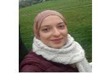

Augmented Reality technology (AR)
offers innovative ways to visualize and manipulate 3D data of an object by superimposing
computer-generated images into another object interactively. The ability to interact with digital
and spatial information in real-time offers new opportunities to manipulate, visualize and process
medical data with more ease and efficiency.
Partners
Sahloul Hospital of Sousse
The Sahloul hospital is a public
health establishment and a Tunisian university hospital center located in Sousse.
The main activity of the Sahloul University Hospital is to provide care as well as
to ensure prevention, education and research in the medical and health fields.
University of Sousse
The University of Sousse is a public academic organization that offers bachelor's, master's
and doctorate training programs in four families of disciplines namely humanities, social sciences,
engineering and technology and health sciences.
ISSAT Sousse
The Higher Institute of Applied Sciences and Technology of Sousse is a scientific institute under the University of Sousse (Tunisia)
It offers training in the fields of computing, electronics, energy and mechanics. The mission of the ISSAT is also to train computer engineers and multidisciplinary research Masters.
Researches
Pr. Mehdi Jaidane
odio dignis- simos ducimus qui blanditiis praesentium
volup- tatum deleniti atque corrupti quos dolores et quas molestias excepturi
sint occaecati cupidi- tate non provident, similique sunt in culpa qui officia deserunt mollitia.
Et harum quidem rerum facilis est et expedita distinctio.
Nam libero tempore, cum soluta nobis est eligendi optio cumque nihil impedit quo minus
id quod maxime placeat facere possimus, omnis voluptas.
Pr. Borhen LOUHICHI
is an Associate Professor at the Higher Institute of Applied Sciences and Technology
of Sousse ISSATSo - University of Sousse, Tunisia and Adjunct Professor at Ecole de Technologie
Supérieure in Montreal, Canada.
He holder of a PhD in Mechanical Engineering from the ENI Monastir,
University of Monastir, Tunisia (2008) and he has obtained his Habilitation to Supervise Research (HDR)
in Mechanical Engineering from the University of Technology of Compiegne, France (2015).
After obtaining
his Ph.D, he is involved in many development and research projects as a co-supervisor of Ph.D thesis and
Postdoctoral researcher at the University of Sousse, Tunisia, the University of Liege, Belgium and ETS,
Canada. Many of these projects are with international companies like Rolls-Royce and Bombardier Aerospace
that has given him experience in coordination and management of projects and writing reports and scientific
papers. His research interests include CAD/CAM/CAE integration, Reverse Engineering,
Additive Manufacturing/ 3D Printing, Product Life Cycle Management PLM, Inspection and Tolerancing.
He was appointed as organizer of many conferences: PLM’12 at Montreal, Canada, IC3M’19 at Sousse, Tunisia...
Also, he was a National Contact Point for the European program H2020. Dr. Louhichi implement the bi-annual 24
hours of innovation in his institute at Sousse, Tunisia. He is an expert – Design and Multimedia at UTICA,
Tunisia and member of the scientific committee at the University of Sousse, Tunisia since 2017.
He is the Co-funder and the president of the Tunisian Organization of 3D Printing.

Dr.Aicha BEN MAKHLOUF
is a researcher at Sousse University. She received her Ph.D. in computer Science in 2020
from ISITCom HAMMAM SOUSSE - University of Sousse, Tunisia. She is a member of the Research Laboratory LATIS
(Laboratory of Advanced Technology and Intelligent Systems). She received the engineering Diploma in Software
Engineering from the Higher Institute of Applied Sciences and Technology Sousse (ISSATso) in 2016.
Her research interest focuses on 3D reconstruction, Computer Aided Design (CAD),
reverse engineering (RE), 3D Computer graphics, 3D shape processing, 3D Computer vision,
deformed mesh reconstruction, Building information modeling (BIM). She is particularly interested in
the application of 3D surface reconstruction methods to rebuild the deformed CAD model in various fields such as
mecanical models, Augmented reality, 3D printing, building models, additive manufacturing, etc.
Dr.Nessrine ELLOUMI
is a researcher at Sfax University. She received her Ph.D. in computer Science in 2021 from
ISITCom HAMMAM SOUSSE - University of Sousse, Tunisia. She is a member of the Research Unit SETIT
(Sciences and Technologies of Image and Telecommunications). She received the engineering Diploma on multimedia
and web technology from the Higher Institute of Informatics and Multimedia of Sfax-Tunisia (ISIMS) in 2015.
She is a member of the organizing committee at the international conference: Sciences of Electronic, Technologies of
Information and Telecommunication SETIT’16 and SETIT'18.
Her research interest focuses on 3D Computer vision, 3D Computer graphics, Computer Aided Design (CAD),
3D shape processing, Visual Perception, Visual quality assessment, 3D Shape modeling, deformed mesh,
Human visual system, Objective perceptual quality metric. She is particularly interested in the application of
3D objective metrics to measure the geometrical distortion applied on 3D model in various fields such as medical prosthesis,
Augmented reality, 3D printing, etc.
Aymen AFLI
is a research master's student in computer science at ISSAT Sousse University.
He completed his undergraduate studies and received his bachelor's degree
in computer science from ISSAT Sousse in 2019.
He got involved in developing new methods to apply 3D printing technology in
the medical field by generating highly customized 3D printed orthosis to aid
the patients in their rehabilitation process.
He has a solid background in organic and CAD modeling, 3D printing,
video-game development, and computer animations.
His interest in Computer graphics led him to pursue his research journey by
exploring various technologies such as Augmented Reality and physics simulations and
study their application in the medical field.
Anass AYED
is a researcher at ISSAT Sousse University. He completed his undergraduate
studies and received his Bachelor diploma in Computer Science in 2019
from the Higher Institute of Applied Science and Technology of Sousse - University of Sousse, Tunisia and
was awarded the Thomas Jefferson Scholarship certificate for completing the TCCSP Program
sponsored by the Department of State, USA, and contribution into professional self-development
and career pathways.
His background includes 3D modeling, computer generated imagery, software development and computer animation.
His research interest spans several disciplines including
3D computer graphics, 3D computer vision, 3D modeling and processing, model
deformable simulation and 3D modeling physics.
He particularly emphasizes on the application of 3D geometrical
computation using Augmented Reality in medical simulations.
In his spare time he enjoys playing video games and reading.